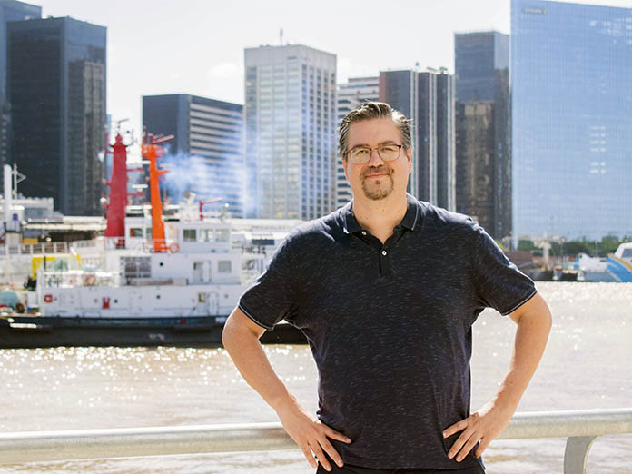
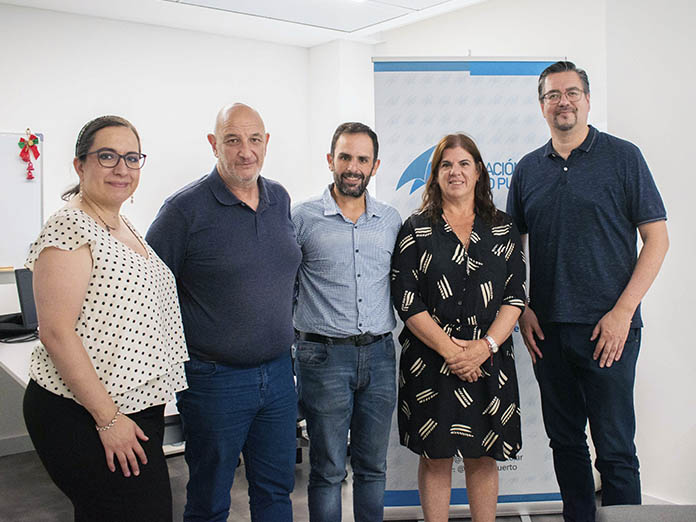

Ascencio: “El liderazgo de la comunidad logística empieza por la autoridad portuaria local”
¿Cómo nace el concepto de Comunidad Logística Portuaria?
Desde principios de los años 2000 desembarca en Argentina, México y Chile el concepto de “Comunidad Logística Portuaria”, principalmente influido por experiencias que provenían desde Barcelona, España. Se comienza a trabajar para que el puerto no sea un ente aislado en donde terminales, autoridades, empresas afines y sobre todo las ciudades no funcionen como entidades estancas y comiencen a interoperar todos juntos en la tramitación y coordinación dentro de la logística portuaria. En ese momento, algunos puertos comenzaron a motivar la idea de conformar estas comunidades, y se empieza a manejar el concepto de “gobernanza de esas comunidades”. A nosotros nos tocó iniciar el camino en el Puerto San Antonio de Chile, donde tuvimos que armar esa comunidad logística que hoy ya tiene 26 socios estratégicos que se ponen al servicio de la actividad portuaria. A partir de esa primera experiencia fuimos convocados por el SELA (Sistema Económico Latinoamericano y del Caribe) y pasamos a una segunda etapa: las mejores prácticas que empezamos a ver en distintos países las concentramos y creamos una red de puertos digitales y colaborativos. Hoy somos 30 puertos trabajando con este concepto.
¿Cómo es el estado de situación en Latinoamérica respecto a Comunidades Logísticas?
Muchos de los puertos que se sumaron recogieron las ideas y, cada uno a distinta velocidad, fueron implementando buenas prácticas en este sentido. Por ejemplo, en Chile, desde hace cuatro años, esto pasó a ser una política de estado: las diez principales empresas portuarias tenían que conformar una comunidad logística y puedo decir que hoy todas esas empresas ya tienen la suya conformada. Los esfuerzos se siguen dando para que cada vez más puertos puedan armar sus comunidades, y no terminan en instituciones multilaterales como el SELA.
¿Quién debería tomar el liderazgo en la gobernanza de la comunidad logística portuaria?
Las comunidades tienen muchos actores y, al final, el poder de tomar decisiones se distribuye entre ellos. Pero al principio el liderazgo público es fundamental: tiene que ser de la autoridad portuaria. Hay muchos ejemplos que muestran que, si la autoridad portuaria no se involucra, el privado aún menos va a pujar por conformar sus comunidades.

¿Qué papel juega la digitalización para promover al puerto como facilitador del comercio internacional?
Ya se está generando, prácticamente, un ecosistema digital e informático. Si a toda la información y datos que tenemos le sumamos inteligencia artificial, predicciones e información en anticipo, podemos crear otros productos que ayuden a nuestros clientes. Fidelizar al cliente es muy importante, sobre todo porque se trata de una industria de bajos márgenes e intensiva en activos. La productividad es clave: si no se cuenta con tecnología y con los datos en tiempo real, el impacto económico negativo es muy grande.
¿Cuál debería ser el rol de la digitalización en la integración del sistema público y el mundo privado?
El organismo público —aduanas, ministerios de economía o secretarías de comercio exterior— tiene la necesidad de adaptar sus sistemas para acoplarse a los sistemas informáticos de los privados: documentación digital, estandarización y organización de la información. Hay que romper con las “islas informáticas”; al final esto es como una red neuronal que está conectada en todos sus nodos.
¿Qué tan importante resultó estar digitalizados ante el evento pandémico del 2020?
Después de la pandemia se comenzó a hablar de “puertos resilientes”: aquellos que tienen esta gobernanza y que pueden reaccionar ante situaciones extremas. Muchos puertos que no tenían esta condición fueron más lentos para la toma de decisiones. Creo que una variable que hoy se está sumando en el mundo portuario es la de crear “capacidad de resiliencia”, y la tecnología ha demostrado ser un habilitador clave de esa competencia.